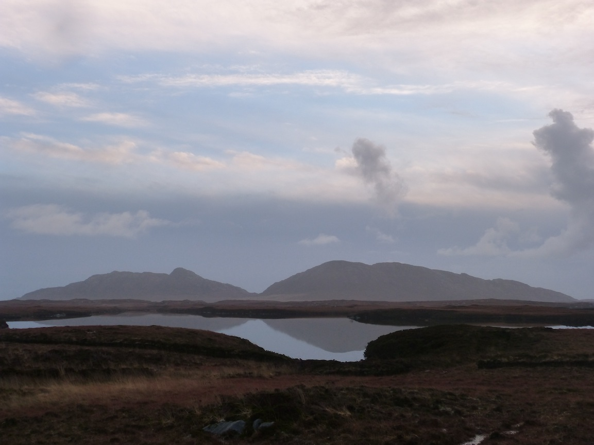

Hi, I'm
Madeleine. Thanks for pausing here, now.
19th January 2014
I'm waking up in a strange bed at my sister's house in London. There are moustaches printed on the sheets and a clothes dryer in the room. Charlotte gave me an extra blanket in case I was cold but I slept like a baby and woke up toasty warm with the January sun seeping through the gap round the blind.
I dreamed that someone stabbed me last night and I didn't care. I closed my eyes and knew what would happen and the dream moved on with me, dead.
New opportunities are appearing and I'm feeling brave and happy and scared. I don't like change and I don't like "letting people down". Which means I work hard at building relationships. I like to feel needed and relied on. I then feel like I can't change the status quo, can't leave, because they'll miss me. It's a perfect catch 22.
Only 20 days in, this year has been a process of metamorphosis, of regeneration. I feel as though I'm emerging from a chrysalis, sleek and shiny.
Today I'm going to see my husband's new tattoo, only 24 hours old, for the first time. See my parents and my other siblings. Send an email that will catalyse the changes that are approaching. Take deep breaths and feel brave. Remind myself, this is what I want.
What's next?
Uist

The Hebrides are a little sliver of islands off the west coast of Scotland. The last barrier between the mainland and the wide cold sea. We arrived at night and drove off the ferry down the one main road, a single track winding between lochs and open water, causeways spanning the tides. In the morning we came out of the house and looked around.
The island was very wet, and pretty flat, and brown. Tweedy. Like an otter’s coat. Greens and reds and yellow grasses whipped by the constant wind.
There's not much daylight at the turning of the year, so we lived in a perpetual sunrise/sunset. The colours so intense, dissolving vividly into each other. The dark clear water. The archipelago is more water than land. The earth itself soggy and saturated, briny water pooling in each footstep.
Little flurries of birds, flashes of black and white. Eagles and buzzards and fat round seals basking on the rocks.
I thought about the first people who colonised these islands. How they got there, not knowing what they would find. I find myself called to these edges at the moment, to the fringes of civilisation. Perhaps because I feel in my own life that I am reaching an edge, setting out across a stretch of water.
I learned a saying of the islands: "What the wind brings, the current takes away." It's a tough life, out on the edge. Even in 2013 we almost didn't make it, the seas were so high and the winds so strong.
Crofting is the old subsistence living of the highlands and islands of Scotland, swept away in the brutal clearances of the nineteenth century. Ancient smallholdings. A way of farming specific to that time and place, the acid peat soil tempered by alkaline seaweed laid out in lines of what were called lazy beds. Somewhere in the balance a living is scratched out.
One of the islands, one of the smallest, Eriskay, was once famous for its knitted wool jerseys. Each one had its own unique pattern; fishermen who died at sea could be identified by the intricate pattern of the wool. I have the sense that creativity was not welcomed for its own sake; there was no time to spare. And yet it found a way to flourish, for a reason.
Peter May imagined an island woman:
"Most of her time was spent spinning, dyeing and weaving wool, and joining with the other women in the waulking of the cloth, all sitting around a long wooden table out front and turning and beating the weave until it was thickened andfully waterproof. As they waulked they sang to the rhythm of it. Endless songs to make bearable the mindless repetition."
I think about the repetitive tasks I have done in my working life. Answering phones with the same, inane greeting, over and over. The catching of buses, the sending of reports and emails. The form letters, the templates.
In tasks like that I like to be the one who provides the unexpected flash of humanity. The personal, the handmade. I like to jolt people out of their low expectations, out of the morass of what we expect and what everyone does. Not to be better. But to be true. To be more me.
This year, I want to do things slowly. My mantras in January have been "all is well" and "one thing at a time". I’m not being over-ambitious with my resolutions, not trying to make a hundred changes.
In the dark and the rain, sometimes my practice in the morning has been just lying in bed, waking up very slowly. Feeling my fingers and toes and my husband breathing next to me. Gradually inhabiting my body. Hearing the rain outside and the dawn chorus and the bang of the catflap. I've been taking my time.
I do less but I'm doing each thing I do more. This year, I'm starting at a point where I'm lucky because most of the things I spend my time on I don't want to switch off from. And I want to cultivate that. To become who I am.
To building the lives we want. Slowly and lightly. To the wind and the rain and the salt spray. To reaching the edge of the world, wherever that may be.
January 11th 2014
11th January 2014
I had a writing date. I met Ava at the station and we went to pick up lunch ingredients. Miso, turnips, avocados. We walked back to the house along the path next to the allotments. Someone had lit a bonfire and smoke was rising into the cold air of this year that still feels brand new to me.
We talked all afternoon about online and offline realities. About how people share everything online except the really big things. Like being scared, or sad, or lonely. About second-guessing your choices in real life because of how they would appear online.
We talked about the books we'll write and the people who'll read them and now I'm drinking tea with the cat nagging me and I think I might go back to my draft next week. Might see where the story takes me.
Like what you read? Sign up. I'll let you know when I publish a new piece here, and you'll get to read the secret stuff I don't want to share in public.